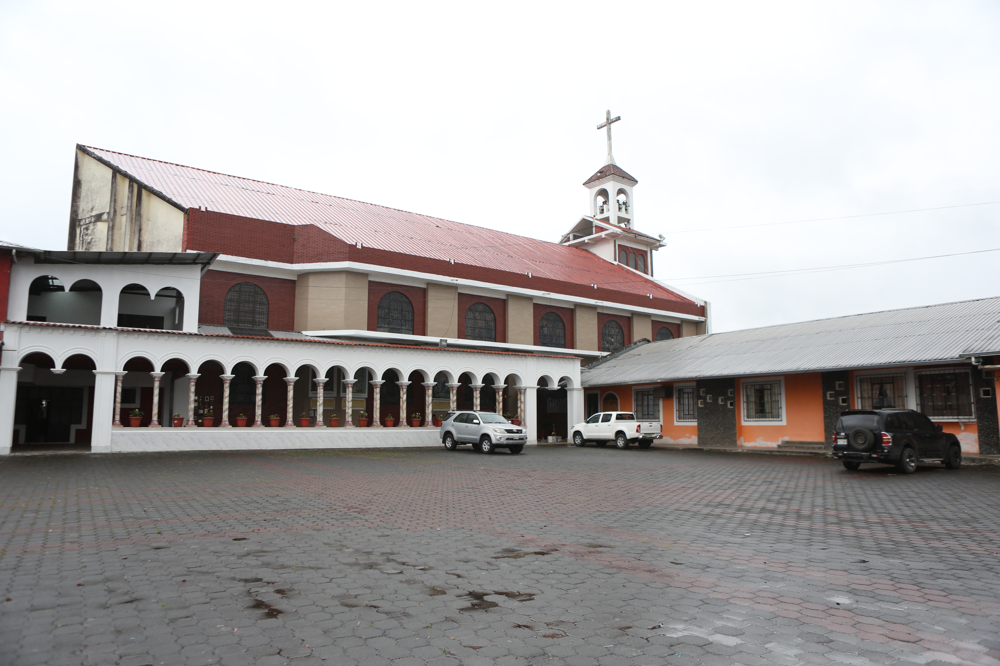
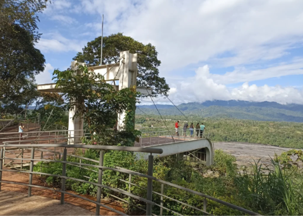
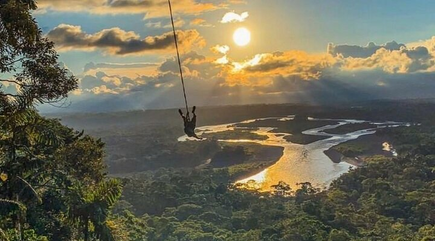
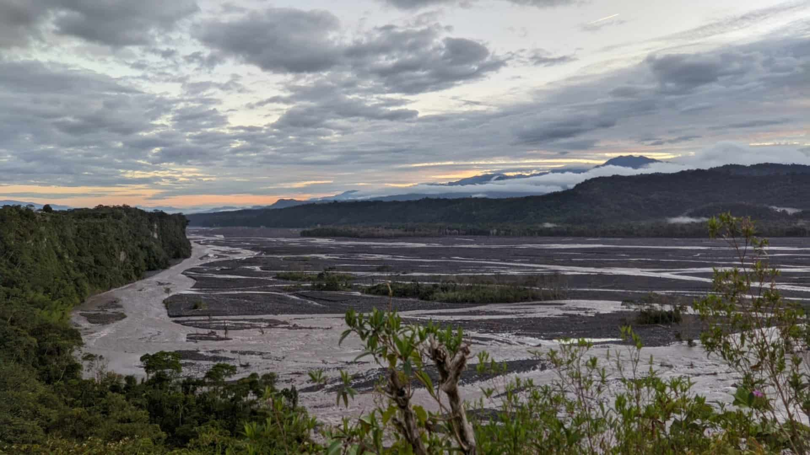

Elije tu lugar atractivo turístico favorito
99% NATURALEZA

Santuario Purísima de Macas
Uno de los principales símbolos históricos, culturales y religiosos de la ciudad.
Ubicación: Barrio El Mirador.Actividad: Caminata y descanso.

Mirador El Quilamo
Un mirador natural desde donde se puede disfrutar de una vista panorámica de Macas, el valle del río Upano y las montañas.
Ubicación:Macas, Morona Santiago.Actividad: Caminata, fotografía y observación del paisaje

Parque Recreacional Jorge Felipe R.
Espacio recreativo rodeado de naturaleza, ideal para disfrutar de un momento tranquilo y observar el paisaje.
Ubicación:Macas, Morona Santiago.Actividad:Caminata, fotografía y recreación.

Mirador Alto Upano
Un mirador natural desde donde se puede disfrutar de una vista panorámica de Macas, el valle del río Upano y las montañas.
Ubicación:Macas, San Isidro, Morona Santiago.Actividad: Fotografía y observación del río upano y de la naturaleza.